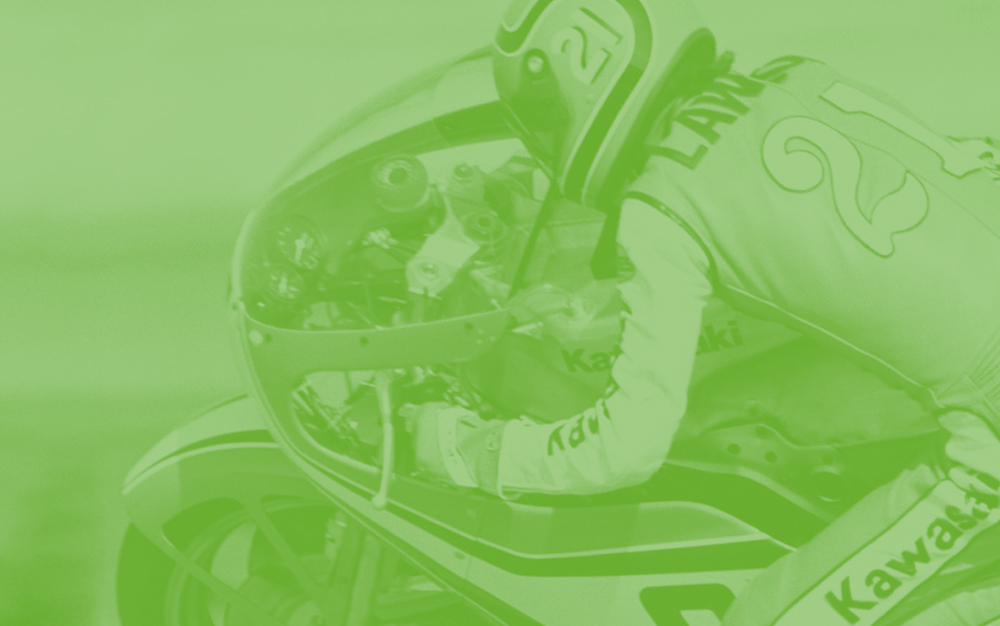

Kernwaarden
“Kawasaki creëert high-performance producten voor motorrijders die op zoek zijn naar de ultieme rijervaring. ”

Motorcycle & Engine Company is de enige afdeling van Kawasaki Heavy Industries, Ltd. dat producten rechtstreeks aan de consument levert. Het bedrijf produceert een breed scala van producten, waaronder motorfietsen, ATV's, terreinwagens, jetski's®, benzine motoren voor algemene doeleinden etc, en levert deze aan markten over de gehele wereld.
1963
In 1963 zijn Kawasaki en Meguro gefuseerd in Kawasaki Motorcycle Co., Ltd.
hi

Door gebruik te maken van de ontwikkeling en productie kennis voor vliegtuigmotoren, heeft Kawasaki een aantal historisch gerenommeerde motorfietsen geintroduceerd, sinds de start van de productie van de eerste motorfiest in 1953. Waaronder de "H1", "Z1" en "GPZ900R".
Dit motor assortiment heeft zich steeds verder uitgebreid, door nauwkeurig te voldoen aan behoeften van de markt, en heeft bijgedragen aan de verbetering van de algehele Kawasaki merkreputatie.